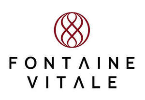

Trade Mark Journal No.2025/048 28 November 2025
UK00004290172 6 November 2025 (1,5,40,42,44)
Mark 1

Mark 2
- Class 1
- Stem cells for industrial purposes; stem cells for research purposes; stem cells for scientific and medical research; stem cells for scientific purposes.
- Class 5
- Pharmaceutical compositions containing stem cells; pharmaceutical preparations containing stem cells; stem cells for medical purposes; surgical implants grown from stem cells; dietary supplements and dietetic preparations; dietary supplements for body weight control; dietary supplements for medical use; dietary supplements with a cosmetic effect; pharmaceutical preparations for skincare; bandages for skin wounds; pharmaceutical preparations for wounds; intravenous fluids used for rehydration, nutrition and the delivery of pharmaceutical preparations; medication; diagnostic reagents or assays for neurodegenerative diseases and/or cognitive health biomarkers.
- Class 40
- Custom manufacturing of dietary supplements for humans; custom manufacture of medical devices for others; custom manufacture of pharmaceuticals; custom manufacture of products for the pharmaceutical, chemical and food industries by compressing and compacting powders and granules; custom manufacture of biopharmaceuticals; processing of biopharmaceutical materials for others; processing of chemical reagents; processing of medicinal materials.
- Class 42
- Analysis of human tissues and stem cells for scientific research purposes; stem cell research; stem cell research services; testing of human tissues and stem cells for scientific research purposes; biological research, clinical research and medical research; biomedical research; providing information about medical and scientific research in the field of pharmaceuticals; cell culture services for scientific and research purposes for others; scientific services relating to the isolation and cultivation of human tissues and cells.
- Class 44
- Medical advisory services; medical and healthcare clinic services; medical and surgical services; medical care services; medical check-ups; medical diagnostic services; cognitive testing; medical services; medical treatment services; health spa services for health and wellness of the body and spirit incorporating massage, facial and body treatment services, and cosmetic body care services; providing information in the fields of health and wellness; wellness services being health and nutritional advice; analysis and processing of blood plasma and stem cells being medical services; medical services relating to the removal, preservation, treatment, processing and storage of human biological materials including but not limited to blood, umbilical cord blood, placenta, human cells, stem cells and bone marrow; stem cell and tissue bank services; holistic psychotherapy services; aesthetician services; orthodontic services; professional consultancy in the field of medical technology, medical surgery and orthopedics; occupational therapy and rehabilitation services; physiotherapy services; pharmacy advisory services; pharmacy dispensary services; telemedicine services; virtual health consultations; digital health monitoring and assessment services.
Genting Innovation Pte. Ltd.
Representative: Abion UK Limited